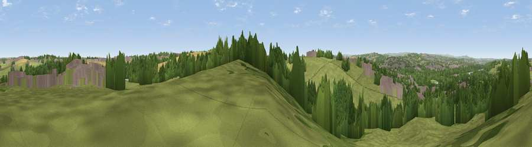

Viewpoint near Killamarsh
#27492 in England · top 43% of its area beats it · near KillamarshThe view, rendered

A 360° render of this exact spot computed from the terrain model, tree cover and land cover — summer colours, afternoon light, calibrated against photographs of famous viewpoints. Real trees, hedges and buildings will differ in detail.
The panorama
Grey silhouette: terrain skyline in each direction (720 bearings, Earth curvature and refraction included). Dashed green: skyline with trees (+15 m) and buildings (+8 m) as obstacles. Blue strip: how far the ground is visible on each bearing.
Where the view opens
Wedge length = distance to the farthest visible ground on that bearing (vegetation-aware). Rings at 10, 25 and 50 km.
What fills the view
46% grassland · 29% woodland · 15% built-up · 8% cropland · 1% water
Angular shares of the visible panorama (visual magnitude), not map area. Landscape diversity 0.55 (0–1 Shannon).
Key numbers
More beautiful places nearby
The staircase of upgrades: each row has a higher view potential than everything closer. Driving times are estimates from straight-line distance, calibrated against real road routing — check an actual route before setting out.
| Place | Direction | Drive | Score |
|---|---|---|---|
| Fir Hill | ESE · 3 km | ~7 min | 50.4 |
| Viewpoint near Ridgeway | WNW · 7 km | ~14 min | 67.6 |
| Viewpoint near Maltby | NE · 14 km | ~25 min | 70.8 |
| Viewpoint near Oughtibridge | NW · 19 km | ~33 min | 72.5 |
| Viewpoint near Wharncliffe Side | NW · 22 km | ~36 min | 75.2 |
| Tissington Hill | SW · 42 km | ~62 min | 75.5 |
| Wild Bank | WNW · 51 km | ~72 min | 76.2 |
| Viewpoint near Carrbrook | WNW · 51 km | ~72 min | 77.1 |
53.32320, -1.30074 · source: screening · position refined by local search. Computed location — check access rights before visiting.